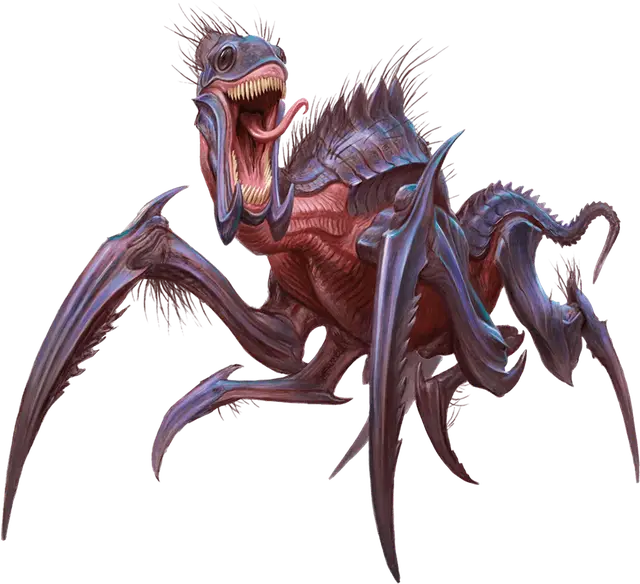

Молодой крутик
Young Kruthik
Маленький Монстр, без мировоззрения

Класс Доспеха 16 (природный доспех)
Хиты 9 (2к6 + 2)
Скорость 30 футов, лазая 30 футов, копая 10 футов
| мод | спас | ||
|---|---|---|---|
| СИЛ | 13 | +1 | +1 |
| ЛОВ | 16 | +3 | +3 |
| ТЕЛ | 13 | +1 | +1 |
| мод | спас | ||
|---|---|---|---|
| ИНТ | 4 | −3 | −3 |
| МДР | 10 | +0 | +0 |
| ХАР | 6 | −2 | −2 |
Навыки Восприятие +4
Чувства тёмное зрение 30 футов, пассивное Восприятие 14, чувство вибрации 60 футов
Языки Крутик
Опасность 1/8 (25 опыта)
Бонус мастерства +2
Среда обитания Горы, Подземье, Пустыня
Особенности
Тактика стаи. Крутик совершает броски атаки с преимуществом против существ, в пределах 5 футов от которых находится дееспособный союзник крутика.
Прокладывание туннеля. Крутик может копать сквозь сплошной камень со скоростью копания, уменьшенной вдвое, оставляя за собой туннель диаметром 2,5 футов.
Действия
Укол. Рукопашная атака оружием: +5 к попаданию, досягаемость 5 футов, одна цель. Попадание: 5 (1к4 + 3) колющего урона.
Описание
“Представьте себе улей муравьев размером с лошадь, только эти муравьи облачены в броню".
— Морденкайнен
“Другие существа, обитающие в ульях, служат определенной цели в естественном мире. Пчелы опыляют цветы. Термиты создают землю из деревьев. Крутики же, уничтожают общества.”
— Морденкайнен
Крутики – это покрытые хитином рептилии, которые охотятся в стаях и гнездятся в размашистых подземных сетевых туннелях. Они тянутся к источникам тепла, таким как дварфийские кузницы и лавовые озёра, и роют свои логова максимально близко к таким местам. Закопавшись в землю, они живут там, в туннелях (сведение, часто являющееся подсказкой, что поблизости обитает крутик). Крутики применяют, существовавшие ранее, подземные проходы, и иногда сооружают в них свои логова.
Крутики могут сосуществовать с Конструктами, Элементалями, Слизью и Нежитью, и подобные существа помогают им сторожить свой улей. Крутики достаточно умны, чтобы заградить одни туннели и выкопать другие для защиты своего потомства подальше от соседей.
Крутики общаются между собой через серию шипений и щёлкающих звуков. Эти звуки, чаще всего, можно услышать заранее, до нападения крутиков. Когда в их логово вторгаются, сторожащие крутики посылают, своего-рода, предупреждения, стремительно постукивая по каменной поверхности своими острыми ножками.
Помимо своего обострённого обоняния, крутики могут видеть в темноте и распознавать различные колебания вокруг них. Запах трупов их сородичей они воспринимают как предостережение, и избегают те места, в которых погибло множество других крутиков. Убийство большого количества крутиков в одной зоне может заставить оставшуюся часть улья переместиться на другую территорию.
Хоть и питаются падалью, крутики больше предпочитают живую добычу. Они убивают своих противников, пронзив их своими острыми конечностями, и измельчив их плоть и кости своими челюстями, способными пережевать даже камень. Если несколько крутиков соберутся против одного противника, они становятся намного яростными и смертельно опасными.
Молодой крутик
Крутики вылупляются из яиц, отложенных взрослыми самками. Каждое яйцо, размером с голову взрослого человека, вылупляется в течение месяца. Крошечные крутики-детёныши безвредны, редко отходят далеко от гнезда и питаются, в основном, различными отходами и друг другом. В течение месяца оставшиеся в живых становятся молодыми крутиками, достаточно большими, чтобы самостоятельно охотиться и защищаться.